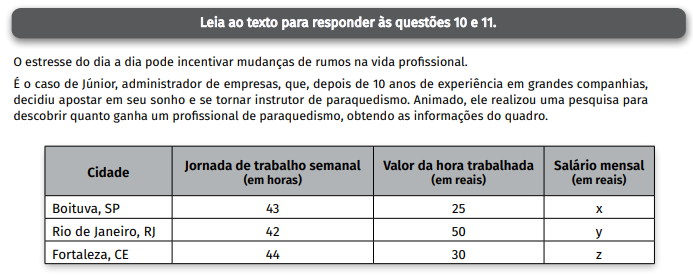
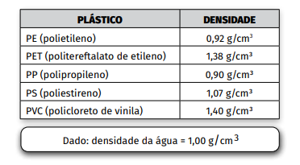
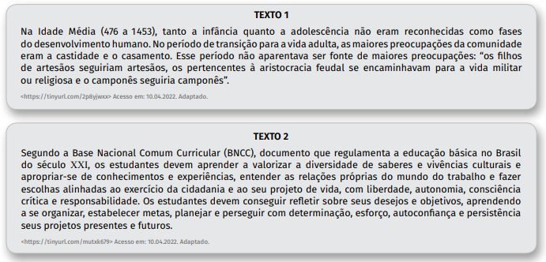

Score: 0
Questão 1
Suponha que, no momento da entrevista, a unidade escolar mencionada no texto registrava um índice de evasãoescolar de cerca de 30 % em relação aos alunos matriculados no início do ano letivo.
Logo, o número de alunos matriculados no início do mesmo ano, nessa unidade escolar, era aproximadamente:
(A) 1 200.
(B) 1 040.
(C) 980.
(D) 860.
(E) 630.
Questão 2
O desemprego estrutural é aquele causado pela introdução de novas tecnologias no processo produtivo de uma empresa, a fim de reduzir os custos.
O desemprego conjuntural está vinculado às oscilações econômicas de um país: se a economia está aquecida, as empresas contratam, diminuindo o desemprego; se a economia não está indo bem, as empresas demitem parte de seus funcionários para equilibrar suas contas, aumentando o desemprego.
Sobre os tipos de desemprego citados, podemos afirmar corretamente que:
(A) O desemprego estrutural é passageiro, pois quando a economia de um determinado país começa a melhorar os empregos retornam e as pessoas se reempregam.
(B) O desemprego estrutural está ligado à adoção de novas máquinas e robôs nas empresas que os adotam para substituir o trabalho humano.
(C) O desemprego conjuntural diminui em tempos de crise econômica e aumenta quando a economia mostra sinais de vitalidade.
(D) O desemprego conjuntural será zerado quando todas as máquinas e robôs forem destruídos pelos trabalhadores.
(E) O desemprego conjuntural e o desemprego estrutural são sinônimos, pois definem o mesmo tipo de desemprego.
Questão 3

A técnica de controle biológico descrita no texto consiste na:
(A) Introdução de insetos prejudiciais à agricultura, uma vez que se alimentam de tecido vegetal.
(B) Aplicação de inseticidas, a fim de diminuir o número de organismos causadores das pragas presentes em culturas de hortaliças e de árvores frutíferas.
(C) Utilização de sementes previamente selecionadas e no emprego de fertilizantes, a fim de expandir as plantações de soja e de outras lavouras.
(D) Utilização de inimigos naturais específicos, como predadores, a fim de combater os organismos causadores de danos às plantações.
(E) Introdução de insetos parasitas na plantação, a fim de impedir que os seres causadores da praga cheguem à fase reprodutiva.
Questão 4
Considere uma recomendação para adubação de 500 kg/ha, sendo o espaçamento entre os sulcos de 60 cm. A massa de adubo que deverá ser utilizada, em kg, em um sulco com 150 m de comprimento, é de:
(A) 3,0.
(B) 4,5.
(C) 30,0.
(D) 450,0.
(E) 4 500,0.
Questão 5
No período abordado pelo texto, os humanos:
(A) Mostraram-se incapazes de suprir suas necessidades básicas de sobrevivência, o que os fez viver exclusivamente da caça, da pesca e da coleta.
(B) Viviam de forma muito semelhante à dos demais animais, sem desenvolver técnicas capazes de melhorar a vida em sociedade.
(C) Aprenderam a reconhecer e a cultivar vegetais comestíveis e ervas curativas e, consequentemente, desenvolveram a agricultura.
(D) Desconheciam formas de exploração e utilização de recursos naturais, como vegetais comestíveis e ervas curativas.
(E) Reuniram um conjunto de saberes e técnicas de trabalho e desenvolveram um modo de vida em sociedade.
Questão 6
No texto apresentado, o eu lírico tece reflexões sobre sua vida e sua realidade.
Algumas delas evidenciam aspectos sociais relevantes, tais como:
(A) A garantia da felicidade pelo acúmulo financeiro, como representado no verso 8.
(B) A visibilidade social da classe trabalhadora, como representado no verso 9.
(C) As vantagens da utilização do transporte público, como representado no verso 12.
(D) A busca ininterrupta pela felicidade por meio do consumo constante, como representado no verso 22.
(E) o potencial de transformação social das classes desfavorecidas, como representado no verso 24.
Questão 7
O rap é um estilo musical urbano caracterizado pela declamação ritmada de suas letras. Outra característica marcante desse gênero encontra-se na utilização de diferentes níveis de linguagem.
Assinale a alternativa em que todas as palavras pertencem à linguagem coloquial.
(A) Ser, ontem, menina, cê.
(B) Cê, tô, pra, busão
(C) Pra, dim, horizonte, esperança.
(D) Dim, chance, paz, latinha.
(E) Sol, cruza, mamãe, amordaçado.
Questão 8
Sobre a passagem “Tô com a paciência de quem junta latinha / Focado no que tenho, não no que vou ter ou tinha”, é correto afirmar que o eu lírico
(A) Sente-se dividido entre o passado, marcado pela culpa, e o futuro, marcado pelo medo e pelas incertezas.
(B) Está, apesar das condições sociais, paciente e procura se manter centrado no presente vivenciando cada dia isoladamente.
(C) Encontra-se inquieto diante de suas condições sociais, revendo o passado para não errar no futuro, mas ignorando o presente.
(D) Permanece, durante o seu trabalho, concentrado na realização de suas tarefas para evitar relembrar suas experiências passadas.
(E) Recorre à coleta de materiais recicláveis como metáfora para a imprudência de vivenciar apenas o presente, sem se preocupar com o futuro.
Questão 9
Nos versos 1 e 2, Emicida nos remete ao:
(A) Amanhecer e a um novo dia com gosto de frustação.
(B) Amanhecer e à existência de uma nova interrogação.
(C) Amanhecer e a uma nova oportunidade para sermos melhores.
(D) Anoitecer e ao arrependimento do dia que se foi.
(E) Anoitecer e à paralização dos sonhos.
Questão 10
Considere que um mês tem, em média, uma duração de 4,5 semanas, assim, é correto afirmar que:
(A) x > y > z.
(B) y > x > z.
(C) z > x > y.
(D) x > z > y.
(E) y > z > x.
Questão 11
Júnior optou por se mudar para a cidade de Boituva nas proximidades de um centro de treinamento T.
Nessa cidade, ele encontrou algumas opções de imóveis, que denominou A, B, C e D. Além disso, ele descobriu que o ruído gerado pelas aeronaves do centro de treinamento podia ser ouvido em uma região com centro em T e raio de 6 km.
Ao representar esses imóveis e o centro de treinamento em um plano cartesiano, cujos eixos têm escalas em kilômetros, ele obteve as coordenadas:
Com base nessas informações, são imóveis que estão fora da zona de ruído:
(A) A e B.
(B) A e C.
(C) A e D.
(D) B e C.
(E) B e D.
Questão 12

Entre as principais características do sistema de produção mencionado no texto, podemos apontar corretamente:
(A) A informatização, a substituição dos trabalhadores por robôs e o consequente aumento dos índices de desemprego.
(B) A redução da jornada de trabalho, a ampliação dos direitos trabalhistas e o incentivo ao ócio e à criatividade dos trabalhadores.
(C) A produção artesanal de mercadorias, realizada em espaços domésticos; e a utilização de mão de obra escravizada, proveniente da África.
(D) A linha de montagem automatizada, com a utilização de esteiras rolantes; e a especialização produtiva do trabalhador, que realizava parte das etapas da produção.
(E) A localização das fábricas, que privilegiava a criação de empregos nos países pobres; e o investimento na formação do trabalhador, que deveria conhecer todas as etapas do processo produtivo.
Questão 13
Thomas Robert Malthus foi um economista que em 1798 escreveu um livro denominado Ensaio Sobre a População no qual defendia ser o ritmo do crescimento populacional maior que o ritmo do crescimento da produção de alimentos e, portanto, faltariam alimentos.
As previsões de Malthus não se concretizaram, pois:
(A) A população mundial diminuiu lenta e continuamente, até os dias de hoje e, portanto, a necessidade por alimentos também diminuiu no mesmo ritmo.
(B) Os trabalhadores urbanos, na Revolução Industrial, dividiam seu tempo entre o trabalho em fábricas e em atividades ligadas à horticultura, cultivando seu próprio alimento e, dessa forma, acabando com a fome no mundo.
(C) Novas tecnologias surgiram e foram incorporadas ao processo produtivo nos campos, fazendo aumentar a produção de alimentos, em função do desenvolvimento tecnológico proporcionado pela Revolução Industrial.
(D) As pessoas se dirigiram em grande quantidade, com o avanço da Revolução Industrial, para as zonas rurais atrás de emprego, causando um esvaziamento das cidades e aumentando a produção de gêneros alimentícios nos campos.
(E) Os proprietários das fábricas, durante a Revolução Industrial, preocupados com a qualidade de vida de seus trabalhadores e de suas famílias, criaram um projeto de distribuição de cestas básicas para as famílias de trabalhadores sindicalizados, com o intuito de fidelizar a mão de obra.
Questão 14

Elementos de coesão são palavras e locuções utilizadas dentro de um texto para conectar expressões, orações, períodos e parágrafos.
Sobre os elementos coesivos destacados no texto, é correto afirmar que:
(A) “para”, no segundo parágrafo, expressa ideia de finalidade, evidenciando o objetivo de um empreendedor tradicional, e tem sentido equivalente a “a fim de”.
(B) “para”, no terceiro parágrafo, é utilizado para indicar a direção de um projeto social e pode ser substituído pela expressão “defronte a”.
(C) “porém”, no terceiro parágrafo, expressa ideia de consequência, pois a geração de renda leva à redução de desigualdade social, e equivale a “entretanto”.
(D) “e”, no terceiro parágrafo, apesar de ser normalmente utilizado para expressar sentido de adição, no texto é empregado como oposição, equivalendo a “mas”.
(E) “uma vez que”, no quarto parágrafo, corresponde a “porque”, pois explica a eficácia da atuação do empreendedor social diante de problemas muito complexos.
Questão 15
Com base nas informações apresentadas no texto, é correto afirmar que:
(A) Os conceitos de empreendedorismo estão conectados essencialmente à aquisição de lucro monetário.
(B) A fragilidade do serviço social é resultado do financiamento contínuo e da complexidade do problema abordado.
(C) O empreendedorismo social pode ser voltado tanto à melhoria de uma comunidade quanto à obtenção de retorno financeiro.
(D) Os empreendedores sociais privilegiam investimentos em ações nas bolsas de valores, que possibilitam compartilhar eventuais prejuízos.
(E) O conceito de serviço social é similar ao do empreendedorismo social, pois ambos são ações individuais voltadas à formação de agremiações políticas.
Questão 16
Considere os exemplos:
- I Capacitação de produtores familiares do semiárido para o cultivo e a comercialização de produtos orgânicos.
- II Construção de sistemas de iluminação utilizando garrafas PET e energia solar disponibilizados a preços acessíveis.
- III Organização de campanhas de doação de alimentos e de roupas para vítimas de desastres naturais.
Segundo as definições apresentadas no texto, são exemplos de empreendedorismo social as ações presentes em:
(A) I apenas.
(B) II apenas.
(C) III apenas.
(D) I e II apenas.
(E) II e III apenas.
Questão 17

De acordo com o texto, os plásticos são:
(A) Produzidos diretamente do petróleo, formando pequenas moléculas que serão moldadas.
(B) Compostos obtidos por reações que usam matéria-prima proveniente do petróleo.
(C) Macromoléculas com propriedades variadas e não podem ser moldados.
(D) Estruturas que estão sendo substituídas por outros materiais como o vidro.
(E) Grandes moléculas que darão origem ao petróleo.
Questão 18
Os plásticos podem ser moldados, pois “amolecem” com o calor, chegando a sofrer fusão em determinadas temperaturas. O quadro apresenta o ponto de fusão de alguns tipos de plásticos.
Um técnico de laboratório aquece separada e
simultaneamente amostras, com massas iguais, de cada um dos cinco plásticos do quadro, que estão à mesma temperatura inicial.
O primeiro plástico que sofrerá fusão será o:
(A) PS.
(B) PP.
(C) PE.
(D) PET.
(E) PVC.
Questão 19
Em uma usina de reciclagem, os plásticos são separados por diferença de densidade para, posteriormente, serem fundidos e remoldados em novos objetos. O quadro apresenta a densidade de alguns plásticos.
Em um tanque com água, colocamos objetos maciços confeccionados com os plásticos mencionados.
Os objetos que ficam flutuando na superfície da água são confeccionados com:
(A) PET e PVC.
(B) PP e PE.
(C) PS e PVC.
(D) PET, PS e PVC.
(E) PE, PS e PET.
Questão 20
De acordo com o texto, é correto afirmar que:
(A) As embalagens de latas de flandres, de vidros e de multilaminados vêm substituindo as embalagens PET.
(B) Os plásticos são amplamente utilizados desde sua descoberta no Brasil, em 1941.
(C) O petróleo tem origem nos plásticos que passaram pelo processo de reciclagem.
(D) Os plásticos não se deformam, mesmo quando expostos às altas temperaturas.
(E) O petróleo é a fonte de diversos tipos de matérias-primas e de combustíveis.
Questão 21
As latas de flandres, mencionadas no texto, são feitas de uma:
(A) Mistura revestida de estanho.
(B) Substância pura revestida de aço.
(C) Mistura revestida de ferro e carbono.
(D) Substância composta revestida de ferro.
(E) Substância simples revestida de estanho.
Questão 22
Essa crise econômica:
(A) Ficou restrita aos Estados Unidos, pois, no início do século XX, as economias nacionais eram fechadas e, portanto, as crises eram localizadas.
(B) Causou impactos duradouros na economia mundial, abalou os mercados financeiros ao redor do mundo e provocou a falência de inúmeras empresas e o desemprego.
(C) Provocou o aumento da atividade industrial e do emprego nos países africanos, que não foram abalados pela crise provocada pelo mercado de ações nos Estados Unidos.
(D) Demonstrou a força da economia brasileira, que investiu na modernização das lavouras, aumentando a produção e, consequentemente, a exportação do café.
(E) Confirmou a independência dos mercados financeiros, uma vez que foi contornada sem a necessidade de intervenção dos governos na economia.
Questão 23
Com base nas informações do texto, pode-se concluir corretamente que:
(A) Os profissionais da área médica, que atuam no desenvolvimento de vacinas, desenvolvem imunidade a determinadas doenças e, por isso, não se contaminam, nem transmitem os agentes causadores da doença para seus pacientes.
(B) As vacinas, que são aprovadas pelas agências reguladoras, podem ser produzidas e aplicadas na população a fim de atuarem na prevenção das doenças através de anticorpos específicos produzidos pelo organismo humano.
(C) A pandemia pode ser definida como a concentração de casos de uma mesma doença em um determinado local sem provocar o alastramento em outras regiões.
(D) As vacinas possuem os anticorpos obtidos a partir dos agentes causadores da doença e são eficazes no tratamento dos pacientes contaminados.
(E) A vacina específica para Covid–19 demorou muito tempo para ser produzida, pois a bactéria causadora da doença era totalmente desconhecida.
Questão 24
A análise dos textos nos permite concluir corretamente que:
(A) Na Idade Média crianças e adolescentes, ao chegarem à vida adulta, desempenhariam as atividades reservadas ao seu grupo social; no Brasil do século XXI, os estudantes têm liberdade para fazer escolhas de acordo com seus desejos e objetivos.
(B) A lei garante que, no Brasil do século XXI, ao alcançar a vida adulta, crianças e adolescentes serão sustentados pelos programas sociais do Estado, independente de seu esforço, organização e planejamento pessoal.
(C) Na Idade Média crianças e adolescentes podiam escolher entre ser militares, camponeses ou artesãos; no Brasil do século XXI, os estudantes têm opções de carreira limitadas pela BNCC.
(D) Crianças e adolescentes, no Brasil do século XXI, assim como na Idade Média, não são reconhecidos e, por isso, devem se comportar de acordo com os desejos e objetivos dos adultos.
(E) Na Idade Média os pais se preocupavam com o futuro de seus filhos, uma vez que era preciso ser artesão ou camponês para pertencer à aristocracia feudal.
Questão 25
Comer bem não é comer muito, mas ter uma dieta equilibrada, que atenda às necessidades do corpo e ajude a manter a saúde, reduzindo o risco de várias doenças, como recomendam os nutricionistas e os técnicos em nutrição.
Com relação aos tipos de alimentos, às orientações e aos problemas nutricionais, assinale o que for correto.
(A) Na promoção da alimentação saudável para diminuição de casos de obesidade e hipertensão, deve-se incentivar o consumo de alimentos industrializados e gordurosos na dieta da população.
(B) A celulose presente nas fibras de alimentos como grãos, verduras, legumes e frutas não é digerida pelo organismo humano, não fornece calorias, mas estimula o trânsito intestinal.
(C) Uma alimentação adequada apresenta grande consumo de frutas e outros vegetais, bem como a alta ingestão de gorduras saturadas, sal e carboidratos.
(D) O rótulo do alimento que contém a classificação Zero Lactose informa que esse alimento não tem valor calórico e é indicado para pacientes diabéticos.
(E) Os alimentos como arroz, macarrão e batatas devem ser retirados da dieta, pois não fornecem nenhuma vantagem ao organismo.
Questão 26
Quando se fala em comida, já pensamos em calorias!
Quando ingerimos um alimento, este será “queimado” pelo nosso metabolismo e a energia produzida será usada nas nossas atividades do dia a dia. Para calcularmos essa energia produzida por certa quantidade de um alimento, devemos queimá-lo em um calorímetro. A reação é realizada dentro de um recipiente que está imerso em água e essa energia é expressa na unidade de medida “calorias”.
Leia a frase e complete as lacunas.
Assinale a alternativa que completa, correta e respectivamente, a frase:
(A) Diminui, exotérmica, libera
(B) Diminui, endotérmica, absorve
(C) Aumenta, endotérmica, libera
(D) Aumenta, endotérmica, absorve
(E) Aumenta, exotérmica, libera
Questão 27
Sobre esta doença, pode-se afirmar corretamente que é:
(A) Contagiosa, ou seja, pode ser transmitida de pessoa para pessoa e também pelo consumo de água contaminada.
(B) Limitada a regiões tropicais devido à falta de saneamento básico e à presença do protozoário causador desse tipo de enfermidade.
(C) Prevenida com o tratamento da água e do esgoto; a higienização dos alimentos e das mãos; e a evitação de locais com água parada.
(D) Evitada pela substituição de casas de pau a pique por casas de alvenaria, pois os insetos transmissores se reproduzem nas paredes das casas de barro.
(E) Causada por um tipo de vírus transmitido pela picada de mosquitos contaminados e, entre seus principais sintomas, destacam-se a febre, as dores no corpo e as manchas vermelhas.
Questão 28
Os processos físicos descritos são denominados, respectivamente, de:
(A) Floculação e decantação.
(B) Decantação e filtração.
(C) Filtração e cloração.
(D) Floculação e filtração.
(E) Decantação e cloração.
Questão 29
O hemograma, exame que demonstra as variações quantitativas e morfológicas das células do sangue, pode ser realizado por biomédicos especialistas em análises clínicas.
Pedro, após uma consulta de rotina, realizou um hemograma solicitado por um médico, que evidenciou alteração na taxa de hemácias (glóbulos vermelhos), a qual estava muito abaixo do normal.
Considerando esse hemograma, pode-se concluir que Pedro tem:
(A) Um processo infeccioso.
(B) Problemas na coagulação do sangue.
(C) Dificuldade no transporte de oxigênio no sangue.
(D) Hipersensibilidade do sistema imunológico a determinadas substâncias.
(E) Uma doença causada pela produção insuficiente ou má absorção de insulina.
Questão 30
Assinale a alternativa que apresenta as expressões algébricas da área e do perímetro do painel decorativo de espelhos.
OBSERVAÇÃO
Para todos os cálculos, despreze a necessidade de deixar espaços entre os espelhos ao formar o painel.
(A) Área: 3xy, Perímetro: 3x + y
(B) Área: 3 + xy, Perímetro: 6x + 2y
(C) Área: 3x²y², Perímetro: 6x + y²
(D) Área: 3xy, Perímetro: 6x + 2y
(E) Área: 3x²y², Perímetro: 3x + y
Questão 31
No painel decorativo, a primeira fileira de baixo para cima é toda formada por espelhos retangulares de mesmo comprimento.
Se o painel tiver um total de 3 metros de comprimento, então a medida do comprimento de cada espelho, em centímetros, é:
(A) 300.
(B) 100.
(C) 75.
(D) 50.
(E) 25.
Questão 32
As enchentes são fenômenos naturais, as quais estão tomando grandes proporções em áreas urbanizadas devido aos processos de transformações do espaço natural pela ação humana.
Algumas práticas ambientais podem ajudar a diminuir as enchentes em áreas urbanas.
Assinale a alternativa que apresenta corretamente uma dessas práticas ambientais.
(A) Jogar o lixo em valas e nas encostas para ser levado pela água da chuva até os pontos mais baixos, onde estão os canais de drenagem, os rios e os bueiros.
(B) Impermeabilizar as vias públicas, os quintais e as calçadas, a fim de impedir que grande parte do volume de água precipitado pelas chuvas penetre no solo.
(C) Permitir os processos de assoreamento, a erosão e a sedimentação nos rios, a fim de dificultar o transbordamento dos cursos de água.
(D) Diminuir a eficiência dos sistemas de drenagem, que visam conter ou escoar o curso das enxurradas por meio de bocas-de-lobo, piscinões ou dutos.
(E) Construir e preservar áreas verdes uma vez que a vegetação facilita o processo de infiltração da água da chuva no solo.
Questão 33
De acordo com o texto, é correto afirmar que “pejotização”:
(A) Obriga os patrões a constituírem uma empresa para registrar seus funcionários em carteira de trabalho.
(B) É uma norma constitucional que obriga os advogados a pagarem os custos dos processos trabalhistas.
(C) É uma prática adotada por empresas que pretendem reduzir os custos sobre sua folha de pagamento e deriva da expressão “pessoa jurídica”.
(D) Transfere o pagamento de encargos previdenciários e trabalhistas para os governos municipais, de acordo com a Consolidação das Leis do Trabalho.
(E) Exige que os trabalhadores de entrega por aplicativos criem empresas cooperativadas para facilitar o registro em carteira dessa categoria pelas empresas contratantes.
Questão 34
O princípio dos vasos comunicantes, pelo fato de os líquidos se nivelarem em recipientes que se interligam, é usado em diferentes situações.
Por exemplo, para acertar o nível entre dois pontos em uma obra, os pedreiros utilizam uma mangueira transparente com água, conforme a imagem.
Fonte de dados https://tinyurl.com/udhhjxyu Acesso em: 30.04.2022.
Dentre as alternativas, assinale aquela que melhor representa esse princípio.
(A)
(B)
(C)
(D)
(E)
Questão 35
O mapa representa os caminhos percorridos nos séculos XVII e XVIII pelas bandeiras, expedições armadas por particulares, chamados de bandeirantes.
Estes percorriam o território da América para, entre outros objetivos, aprisionar e escravizar indígenas e procurar por fontes de metais preciosos.
A partir da leitura do mapa, pode-se afirmar corretamente que:
(A) Os bandeirantes, em suas expedições, respeitaram os limites territoriais definidos pelo Tratado de Tordesilhas, em 1494.
(B) As bandeiras se originaram nos territórios espanhóis do atual Uruguai e, de lá, percorreram a América do Sul em todas as direções.
(C) A ação das bandeiras contribuiu para a ampliação dos limites territoriais do Brasil para além daqueles definidos, em 1494, pelo Tratado de Tordesilhas.
(D) O processo de colonização do Brasil se iniciou na região de Olinda e Recife, de onde partiram as principais rotas dos bandeirantes.
(E) As fronteiras atuais do Brasil foram definidas no final do século XVIII, quando as expedições bandeirantes terminaram.
Questão 36
As cooperativas de catadores são responsáveis por buscar e receber os descartes de materiais possíveis de reutilização.
Nas usinas de reciclagem, os materiais recebidos são separados por meio de processos que se baseiam nas propriedades dos materiais, como densidade, imantação e outros.
A propriedade física densidade é a razão entre a massa e o volume de uma amostra de um mesmo material. Por exemplo, a razão entre a massa de uma barra de alumínio e o volume ocupado por essa mesma barra é 2,7 g/cm³, portanto dizemos que essa é a densidade do alumínio (dAl = 2,7 g/cm³).
Aplicando o conceito de densidade, a massa de alumínio, em gramas, que será reciclada de uma escultura que ocupa o volume de 50 cm³, é:
(A) 2,7.
(B) 13,5.
(C) 27,0.
(D) 135,0.
(E) 270,0.
Questão 37
Há momentos que exigem sermos fortes para enfrentarmos dificuldades.
Leia os quadrinhos.
Com base na interpretação dos quadrinhos, pode-se concluir corretamente que:
(A) A emoção se liberta facilmente dos erros do passado e do medo de errar.
(B) A razão supera o medo de errar depois de a emoção se libertar dos erros do passado.
(C) A razão é a única responsável por guiar as ações de se libertar do passado e por errar no percurso da vida.
(D) A emoção norteia as decisões futuras e a razão apenas analisa os erros do passado.
(E) A razão e a emoção devem avançar juntas, libertandose dos erros do passado e do medo de errar.
Questão 38
De acordo com os textos, o trabalho infantil:
(A) Foi liberado pela ONU para as crianças com menos de 14 anos durante a pandemia de COVID–19.
(B) É coordenado pela UNICEF, que regulariza essa prática em todos os países do mundo.
(C) É incentivado pelo Estado para que as crianças ajudem nas despesas de casa.
(D) Foi eliminado do Brasil, mas está em crescimento nos outros países do mundo.
(E) É ilegal e dificulta a vida escolar e o desenvolvimento saudável da criança.
Questão 39
Leia o texto.
Assinale a frase que é um contraponto ao posicionamento da personagem sobre o medo.
(A) “Aprendi que a coragem não é a ausência do medo, mas o triunfo sobre ele”.
(Nelson Mandela)
(Nelson Mandela)
(B) “Um dos efeitos do medo é perturbar os sentidos e fazer que as coisas não pareçam o que são”.
(Miguel de Cervantes).
(Miguel de Cervantes).
(C) “O medo é, dos sentimentos humanos, o mais dissolvente, porque nos leva a fazer muita coisa que não queremos fazer, e deixar de fazer muita coisa que queríamos e necessitávamos fazer”.
(Josué de Castro)
(Josué de Castro)
(D) “O medo é a extrema ignorância em momento muito agudo”.
(João Guimarães Rosa)
(João Guimarães Rosa)
(E) “Os homens se dividem em duas espécies: os que têm medo de viajar de avião e os que fingem que não têm”.
(Fernando Sabino)
(Fernando Sabino)
Questão 40
Sobre a ação do sabão, é correto afirmar que:
(A) Sua capacidade de interagir com as moléculas de água permite transformar a gordura em outras substâncias mais solúveis na água.
(B) Sua interação com as moléculas de gordura se deve à extremidade da sua estrutura denominada cabeça.
(C) Interage com as moléculas de água por meio da extremidade conhecida como cauda.
(D) Remove as moléculas de água presentes na nossa pele, mantendo sobre ela as de gordura.
(E) Está relacionada à capacidade de interação da sua estrutura tanto com água quanto com gordura.
Questão 41
Analisando o infográfico, podemos concluir corretamente que:
(A) O vírus está envolto por uma camada de gordura que ajuda a infectar as células humanas.
(B) O material genético do vírus está localizado nas proteínas que ajudam a infectar as nossas células.
(C) O sabão rompe a camada de gordura protetora do vírus, liberando seu material genético, que será levado pela água.
(D) A parte da estrutura do sabão que interage com a água é denominada hidrofóbica.
(E) A extremidade do sabão que quebra a membrana lipídica do vírus é denominada hidrofílica.
Questão 42
Releia atentamente a passagem apresentada, observando o contexto de ocorrência dos termos em destaque.
Assinale a alternativa que apresenta, respectivamente, sinônimos adequados às palavras destacadas.
(A) Rigorosamente, em cima das, certamente, especificidade e condicionamento.
(B) Afetuosamente, por respeito às, ocasionalmente, temperamento e simpatia.
(C) Avidamente, a respeito das, porventura, honestidade e qualidade.
(D) Rispidamente, durante, às vezes, incapacidade e aparência.
(E) Seriamente, acerca das, possivelmente, índole e habilidade.
Questão 43
O trecho apresentado mostra o personagem Harry Potter, protagonista de uma série de livros infantojuvenis, no momento de escolha de sua carreira.
Com base nas informações do trecho, depreende-se corretamente que a escolha de uma profissão:
(A) Não deve ser abordada pela escola a fim de não influenciar a decisão a ser feita pelos estudantes.
(B) Independe do desempenho e do desenvolvimento acadêmico do estudante durante sua vida escolar.
(C) Exige a intervenção de profissionais da educação para, por meio de coerção, impor opções adequadas socialmente aos jovens.
(D) Dispensa o acompanhamento das tendências de mercado de trabalho para, assim, elaborarem-se as disciplinas ofertadas aos estudantes.
(E) Pressupõe o auxílio da escola aos estudantes no processo de construção do autoconhecimento e de planejamento para alcançar seus objetivos.
Questão 44
Considerando que exista um total de 12 N.I.E.M.s, a alternativa cujo esquema representa o percentual mais próximo do número mínimo de N.I.E.M.s que um estudante de Hogwarts deve ter cursado para estar apto a seguir a carreira de auror é:
(A)
(B)
(C)
(D)
(E)
Questão 45
O cotidiano da escravidão foi marcado por diversas formas de violências perpetradas por senhores e feitores, cujo intuito era submeter as pessoas escravizadas e evitar a rebelião contra este regime de trabalho. Muitas estratégias de resistência, porém, foram articuladas por escravizados.
Entre elas, é correto mencionar:
(A) A Greve Geral de 1917, encabeçada pelos escravos de ganho de São Paulo e Rio de Janeiro.
(B) A greve de fome realizada por Nelson Mandela na prisão, em Joanesburgo, na África do Sul, em 1948.
(C) A onda de rebeliões de escravizados que se iniciou nas fazendas de café na Amazônia e no Rio Grande do Sul.
(D) A revolução do Haiti, que derrubou o governo colonial português e estabeleceu a primeira monarquia das Américas.
(E) A formação de quilombos, comunidades estabelecidas por escravos fugidos em diferentes partes do Brasil.
Questão 46
Os eventos descritos no texto:
(A) Precipitaram a abolição da escravidão e a qualificação profissional dos libertos, que passaram a exercer profissões especializadas.
(B) Desorganizaram o núcleo urbano do Rio de Janeiro, impedindo a realização de obras públicas e, consequentemente, causando desemprego e precarização do trabalho.
(C) Provocaram a diminuição da população da colônia, que caiu pela metade no início do século XIX, em razão da instabilidade provocada pela chegada de grande número de imigrantes.
(D) Incentivaram a industrialização acelerada do Sudeste, especialmente de São Paulo, e a formação de uma classe operária influenciada por ideias trazidas por italianos e alemães.
(E) Promoveram uma modernização urbana que atraiu profissionais qualificados da Europa, mas não alteraram as estruturas escravistas da sociedade brasileira do século XIX.
Questão 47
Leia a reportagem.
De acordo com a reportagem, é correto afirmar que:
(A) As pessoas resgatadas do trabalho análogo ao escravo serão deportadas para seu país de origem.
(B) O trabalho escravo foi legalmente extinto no Brasil no século XX, mas ainda resiste em alguns bairros periféricos da capital paulista.
(C) A entrada de imigrantes é proibida no bairro do Bom Retiro, o que caracteriza a situação de trabalho análogo ao escravo desses imigrantes.
(D) Os trabalhadores resgatados apresentavam carteira assinada e cumpriam uma jornada de trabalho legal, de acordo com a legislação trabalhista brasileira.
(E) Um dos elementos que caracterizam o trabalho análogo ao escravo são as condições degradantes de trabalho, constatadas pela Operação Andrápodon.
Questão 48
De acordo com o texto, é correto afirmar que os trabalhadores rurais:
(A) Conseguiram o acesso aos direitos trabalhistas no ano de 1964.
(B) São em maior número que os trabalhadores urbanos no Brasil de hoje.
(C) Tiveram os direitos trabalhistas equiparados aos dos trabalhadores urbanos em 1988.
(D) Foram reconhecidos como trabalhadores, a partir da Constituição de 1988.
(E) Têm a obrigação de participar do FGTS e da Previdência Privada.
Questão 49
De acordo com a fábula:
(A) O imperador esperava que os garotos percebessem a troca das sementes e as substituíssem para demonstrarem que eram astutos.
(B) Qualquer outro garoto merecia ser o imperador, pois suas plantas floresceram enquanto o vaso de Ping estava vazio.
(C) O conselho do pai encorajou Ping a ser honesto e a apresentar seu resultado, mesmo que negativo.
(D) Devemos nos omitir, quando nossa ação não represente uma vitória, para sermos bem-sucedidos.
(E) As sementes dos demais garotos brotaram mesmo queimadas e seus vasos tinham lindas flores.
Questão 50
Com base no texto, uma atitude semelhante à do personagem Ping é:
(A) Ser desleal ao alcançar lucros financeiros.
(B) Ser empático às pessoas em situação de risco.
(C) Dizer a verdade independentemente das consequências.
(D) Esconder os fatos verdadeiros ao visar aos próprios interesses.
(E) Agir com rapidez e inteligência para ficar com o troco recebido a mais após uma compra.